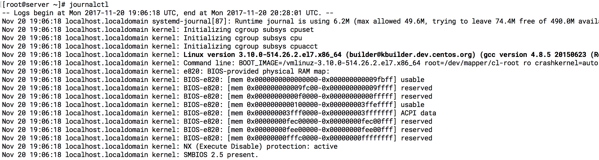
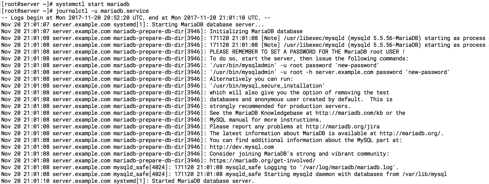

Log Management ด้วย Journalclt
การใช้งาน คำสั่ง Journalctl เพื่อต้องการ ดู log อย่างง่ายๆ และสามารถสืบค้นตามประเภทของ service และ timeline โดยจะติดต่อกับ daemon ชื่อ journald ทำหน้าที รับผิดชอบ ในการจัดการ message ที่สร้างมาจาก kernel, initrd, services เป็นต้น ทำให้เป็นจุดรวมรวมของ log management
คำสั่งพื้นฐานการดู log
journalctl

แสดง logs จาก การ Boot
# journalctl -b
# journalctl --list-boots
0 c36d1ecb7b944a92be5f148619af444c Mon 2017-11-20 19:06:18 UTC—Mon 2017-11-20 20:28:01 UTC
ค้นหา log ตามเวลา YYYY-MM-DD HH:MM:SS
# date
Mon Nov 20 20:56:35 UTC 2017
# journalctl --since "2017-11-20" --until "2017-11-20 01:00:00"
# journalctl --since yesterday
# journalctl --since 09:00 --until "1 hour ago"
ค้นหา Log ตาม unit file
# systemctl start mariadb
# journalctl -u mariadb.service

ตัวอย่างเพิ่มเติม
journalctl -u nginx.service --since today
journalctl -u nginx.service -u php-fpm.service --since today
แสดง kernel Message (dmesg)
journalctl -k
ค้นหา ตาม Priority option -p
journalctl -p err -b
- 0: emerg
- 1: alert
- 2: crit
- 3: err
- 4: warning
- 5: notice
- 6: info
- 7: debug
แสดงผล log ล่าสุด ( tail -n )
// By default dislplay 10 entries
journalctl -n
journalctl -n 20
journalctl -f
journalctl --disk-usage
แสดงผล log ของ user (_UID)
# id vagrant
uid=1000(vagrant) gid=1000(vagrant) groups=1000(vagrant)
# journalctl _UID=1000
-- Logs begin at Mon 2017-11-20 20:52:20 UTC, end at Tue 2017-11-21 02:54:51 UTC. --
Nov 20 20:52:36 server.example.com sudo[3190]: vagrant : TTY=unknown ; PWD=/home/vagrant ; USER=root ; COMMAND=/bin/bash -l
Nov 20 20:52:36 server.example.com sudo[3220]: vagrant : TTY=unknown ; PWD=/home/vagrant ; USER=root ; COMMAND=/bin/bash -l
Nov 20 20:52:37 server.example.com sudo[3459]: vagrant : TTY=unknown ; PWD=/home/vagrant ; USER=root ; COMMAND=/bin/bash -l
Nov 20 20:52:38 server.example.com sudo[3733]: vagrant : TTY=unknown ; PWD=/home/vagrant ; USER=root ; COMMAND=/bin/bash -l
Nov 20 20:52:38 server.example.com sudo[3760]: vagrant : TTY=unknown ; PWD=/home/vagrant ; USER=root ; COMMAND=/bin/bash -l
Nov 20 20:52:38 server.example.com sudo[3789]: vagrant : TTY=unknown ; PWD=/home/vagrant ; USER=root ; COMMAND=/bin/bash -l
Nov 20 20:52:38 server.example.com sudo[3816]: vagrant : TTY=unknown ; PWD=/home/vagrant ; USER=root ; COMMAND=/bin/bash -l
# journalctl _UID=1000 --since "1 days ago"
แสดงผลของ process id (_PID)
# systemctl status mariadb
● mariadb.service - MariaDB database server
Loaded: loaded (/usr/lib/systemd/system/mariadb.service; disabled; vendor preset: disabled)
Active: active (running) since Mon 2017-11-20 21:01:10 UTC; 5h 58min ago
Process: 4025 ExecStartPost=/usr/libexec/mariadb-wait-ready $MAINPID (code=exited, status=0/SUCCESS)
Process: 3946 ExecStartPre=/usr/libexec/mariadb-prepare-db-dir %n (code=exited, status=0/SUCCESS)
Main PID: 4024 (mysqld_safe)
CGroup: /system.slice/mariadb.service
├─4024 /bin/sh /usr/bin/mysqld_safe --basedir=/usr
└─4186 /usr/libexec/mysqld --basedir=/usr --datadir=/var/lib/mysql --plugin-dir=/usr/lib64/mysql/plugin --log-error=/var/log/mariadb/mariad...
Nov 20 21:01:08 server.example.com mariadb-prepare-db-dir[3946]: MySQL manual for more instructions.
Nov 20 21:01:08 server.example.com mariadb-prepare-db-dir[3946]: Please report any problems at http://mariadb.org/jira
Nov 20 21:01:08 server.example.com mariadb-prepare-db-dir[3946]: The latest information about MariaDB is available at http://mariadb.org/.
Nov 20 21:01:08 server.example.com mariadb-prepare-db-dir[3946]: You can find additional information about the MySQL part at:
Nov 20 21:01:08 server.example.com mariadb-prepare-db-dir[3946]: http://dev.mysql.com
Nov 20 21:01:08 server.example.com mariadb-prepare-db-dir[3946]: Consider joining MariaDB's strong and vibrant community:
Nov 20 21:01:08 server.example.com mariadb-prepare-db-dir[3946]: https://mariadb.org/get-involved/
Nov 20 21:01:08 server.example.com mysqld_safe[4024]: 171120 21:01:08 mysqld_safe Logging to '/var/log/mariadb/mariadb.log'.
Nov 20 21:01:08 server.example.com mysqld_safe[4024]: 171120 21:01:08 mysqld_safe Starting mysqld daemon with databases from /var/lib/mysql
Nov 20 21:01:10 server.example.com systemd[1]: Started MariaDB database server.
[root@server ~]# journalctl _PID=4024
-- Logs begin at Mon 2017-11-20 20:52:20 UTC, end at Tue 2017-11-21 02:59:10 UTC. --
Nov 20 21:01:08 server.example.com mysqld_safe[4024]: 171120 21:01:08 mysqld_safe Logging to '/var/log/mariadb/mariadb.log'.
Nov 20 21:01:08 server.example.com mysqld_safe[4024]: 171120 21:01:08 mysqld_safe Starting mysqld daemon with databases from /var/lib/mysql
[root@server ~]#